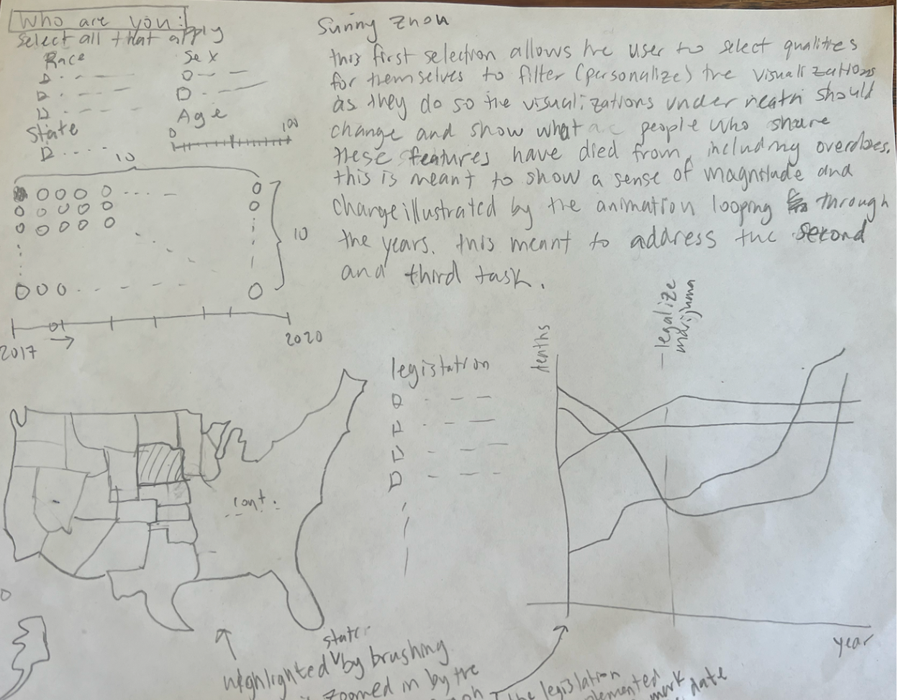
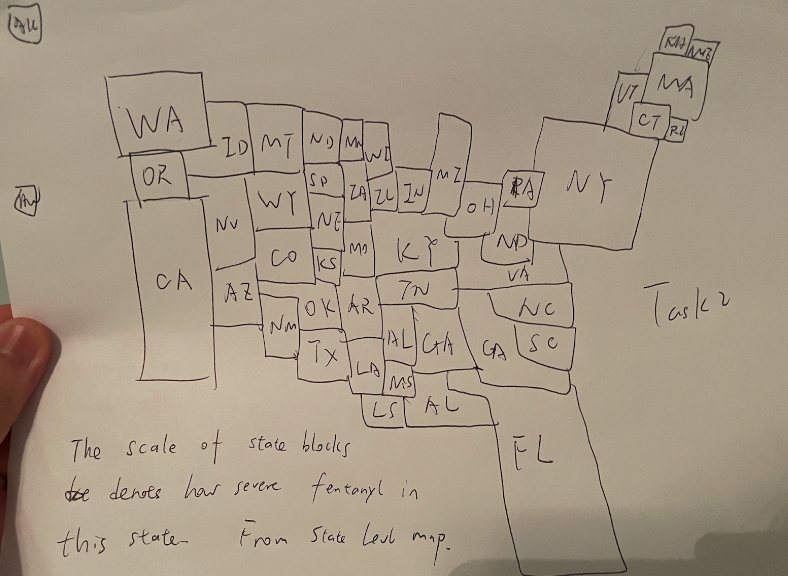
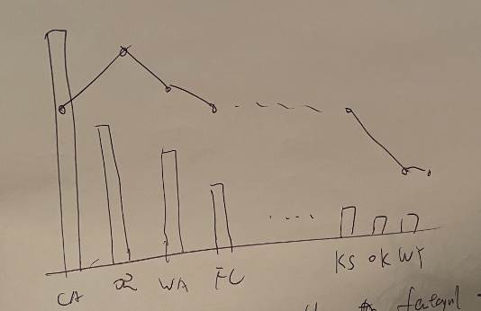
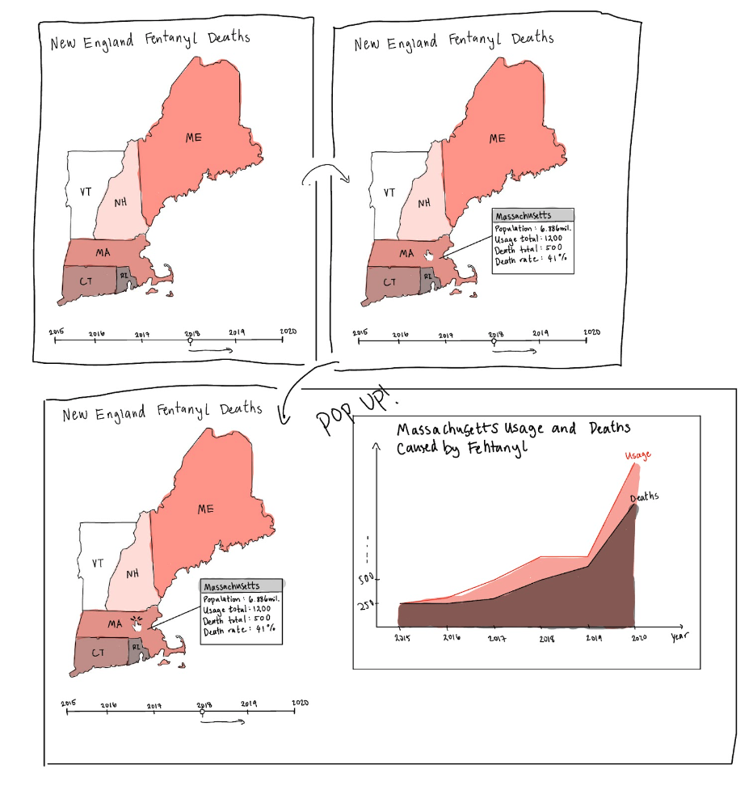

Hang Yu, Yuanhuan Deng, Sunny Zhou, Ye Xu
Project-long Course Project as part of COSI 116A: Information Visualization, taught by Prof. Dylan Cashman, Brandeis University.
In the last few years, it has become impossible to ignore the continuous news of the opioid crisis and rising occurrences of substance abuse. In particular, we have started to hear more and more about fentanyl and how it compares with previous substances. With the extremely wide demographic who partake in these substances it's hard to pinpoint the root cause of this crisis. One thing is certain, this issue affects all of the communities we live in. We aim to provide a visualization to help policy makers understand how to tackle the opioid epidemic and compare the regions through numbers. Our goal is to provide a tool so that someone can easily compare the trend from year to year.
Our goal is to create an interactive presentation showcasing drug overdose trends from 2014 to 2020 in the New England region. The focal point of this visualization is a dynamic regional map, providing users with an overview of drug usage patterns. Upon selecting a specific state on the region map, users can delve into detailed year-wise usage statistics through an interactive line chart.
Click on the years and spefific state to find out the motality changes!
Click on a state to view its drug overdose mortality rate from 2014 to 2020. The 'crude rate' presented here is calculated as the percentage of drug overdose deaths relative to the total population, multiplied by 10,000. Specifically, this rate is determined by dividing the number of drug overdose mortalities by the total population of the state, and then multiplying the result by 10,000 to express it as a per 10,000 people rate.
Final Visualization Screenshots: The final visualization includes an interactive map highlighting drug overdose trends across New England states. Each state's color intensity varies according to the overdose rates, offering an immediate visual representation of the data.
A detailed line chart appears upon selecting a state, depicting the year-wise drug overdose trends. This component helps in understanding the progression or decline of the crisis over the years.
Design Justifications:
Color Scheme: Chosen to effectively represent data intensity – darker shades indicate higher overdose rates. This intuitive color coding helps in quick data comprehension.
Interactive Map: Facilitates an engaging way to explore data across different regions, making the visualization not just informative but also interactive.
Responsive Line Chart: Provides detailed insights and trends when a state is selected, offering a deeper analysis while maintaining user engagement.
UI Walk-through:The user begins with a regional map of New England. Hovering over a state highlights it, and clicking a state brings up the line chart.
The line chart dynamically updates to show data specific to the selected state, across the years from 2014 to 2020.
Users can interact with both the map and the line chart to explore data from a regional down to a state-specific level.
There are two parts to the data that we used: one part for the substance usage data and one part of the maps.
First, we downloaded our data from the WONDER database, which compiled the death totals that have an underlying cause of exposure or abuse of substances, and Tables 1 and 20 from the National Survey on Drug Use and Health (NSDUH) survey data, which are the percentages and totals of illicit drug and pain reliever usages per state respectively. No processing was needed for the data. There is a mixture of percentages and totals in both data sources, but we only used the percentages in the creation of the visualizations. In particular, this is the data located in the file Underlying Cause of Death, 2014-2020.csv. This dataset was already split and categorized by State, State Code, Year, YearCode, Deaths, Population, and CrudeRate, which was perfect for our visualization. The original goal of the project was to compare these two datasets, in order to observe the sheer scale of the issue, but we ran out of time to implement the usage data.
Second, to create the map of the states, a processing script was written and can viewed in extract_new_england.py. This script is responsible for creating the json file used to generate the map.
Processes: 1, Team members are assigned specific roles and tasks, such as data gathering, map creation, and webpage enhancement. 2, Team members design and implement specific interactive elements and features for the visualizations, including creating the map for the New England States, merging data into the map, making the line plot with the mortality data for each state for 2014 to 2020 and linking them. 3, Team members compile and write content for the website, including descriptions and reflective documents. 4, Team members test the website and the visualizations on a local server, refining them based on feedback or observed issues.
Abstract Tasks: 1, Data Processing: convert raw data of mortality caused by drug use from each state into a format suitable for visualization and analysis. 2, Interactive Feature Development: develop interactive elements like filtering and linking different visualizations like the maps and the line graph. 3, Content Writing and Editing: write, edit, and format content for the website and documentation. 4 Quality Assurance: test and refine the project components to ensure quality and effectiveness of the visualization and website.
The journal article The Storyteller (Benjamin) and Narrative Visualization: Telling Stories with Data (Segel) was the basis of our early design ideas. In Narrative Visualization: Telling Stories with Data there is a recurring theme of what defines a story: a good story. It is said that “Stories … often have a beginning, middle, and end” and “communicate information in a psychologically-efficient format”; it has characters and draws your attention to details. In the beginning, we were trying to incorporate these story elements to communicate the scale of this issue. How do we personalize the data to the viewer? Is there a story to be told? What are the “ups” and “downs”? What influences these trends? It was obvious that if we were able to bring the issue closer to the audience then maybe the message could be more clear. After initial sketches, we knew we had to have a map, some type of graph to illustrate populations. Below are some of our designs:
  As described by Brehmer and Munzner, we need to break the task up into smaller "low-level tasks" (Brehmer). From what we know about the importance of color, it was important to have a graph that involves showing the death progression of the areas with colors. These areas need to be able to be clicked on to explore the details. The colors can provide a useful summarize and facilitate the exploration. Since we want present the change over time, now the problem is presenting the years. We can flip through the years with buttons; however, we know that people are terrible at remembering details when switching from different visualization, so we deicded to have the plot show the trend of time as well. We finally settled on a final design that incorporates these elements. Our two visualizations following the ideas of the Shneiderman's Mantra, o
Over the past few weeks, our team has made significant progress on this final project. We've successfully collaborated to aggregate all the necessary data and decided on the most effective visualization methods. Through numerous group meetings and active discussions in Google chat boxes, we've developed our coding approach and effectively coordinated task distribution and descriptions. As a group, we're pleased with the results we've achieved, recognizing that there's always room for improvement. For instance, we might consider revising the color scheme used in our map for better clarity or impact. Additionally, considering each member's varying schedules, a more balanced distribution of the coding workload could enhance our efficiency and overall output in future projects.
List here where any code, packages/libraries, text, images, designs, etc. that you leverage come from.